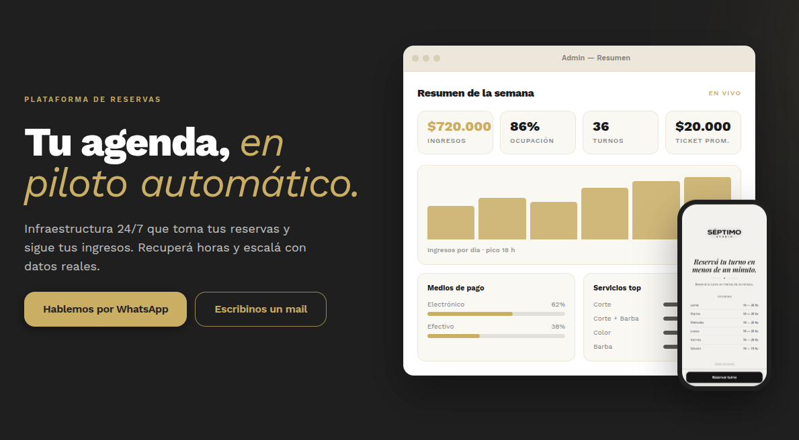
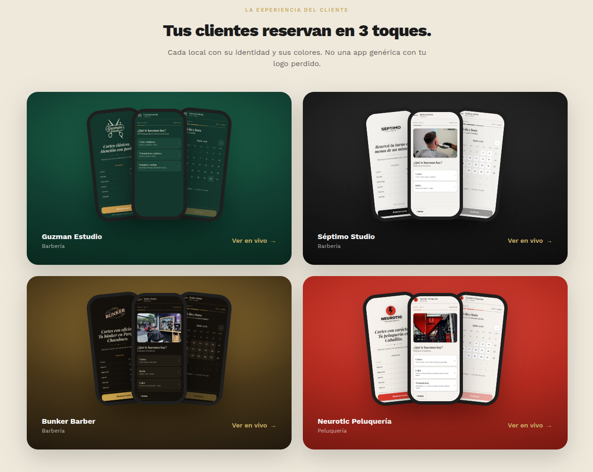
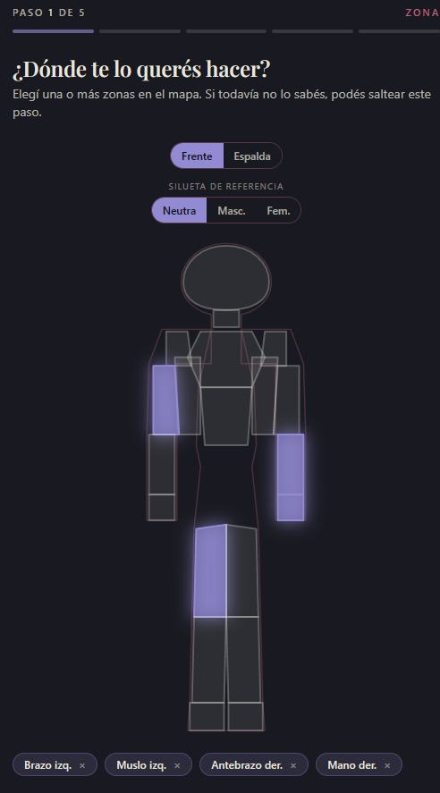
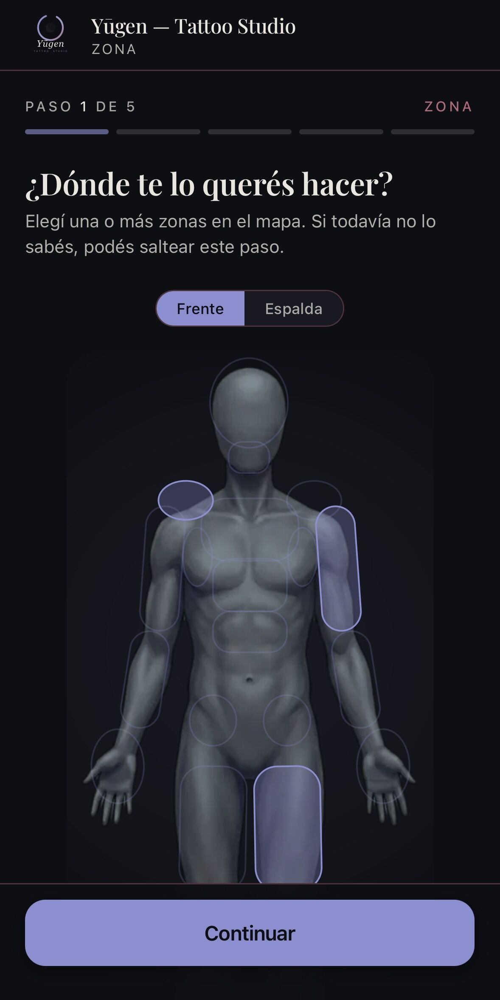

Tus primeros pasos
programando con IA
De una idea a tu primer prototipo, con inteligencia artificial.
La programación está cambiando
Hoy la IA permite pasar de una idea a algo real, mucho más rápido — y a mucha más gente.
Unite al grupo de difusión
Enterate de los próximos eventos, talleres y novedades de The AI Collective Buenos Aires.

Qué vamos a ver hoy
Teoría básica
Los conceptos que necesitás para empezar a usar IA con confianza.
Modelo vs. Agente
¿Qué es un modelo?
Un cerebro entrenado con muchísimo texto.
Su superpoder: predecir la siguiente palabra. Nada más… y nada menos.
¿Qué es un agente?
Un modelo que puede usar herramientas y trabajar solo.
Le das un objetivo; él decide los pasos para llegar.
¿Qué es vibe coding?
Programar describiendo lo que querés, no escribiendo cada línea.
Vos ponés la idea. La IA pone el código.
con mis proyectos y un formulario."
› creando estilos …
› listo ✓
¿Qué es un token?
La IA no lee palabras. Lee tokens.
Regla práctica: 1 token ≈ 4 caracteres ≈ ¾ de una palabra.
Tokens: entrada y salida
Casi todo se cobra por tokens. Más tokens = más costo.
¿Qué es el contexto?
Todo lo que la IA tiene en mente ahora mismo.
Es limitado. Cuando se llena, empieza a olvidar lo más viejo.
¿En qué se diferencian los modelos?
¿Cuál es el mejor?
Depende.
No hay un único ganador. El mejor cambia según la tarea, el presupuesto y la velocidad que necesites.
¿Cuál es el mejor para programar?
El ranking cambia cada pocos meses. Probá y elegí el tuyo.
¿Dónde le hablo a la IA?
Desde la web
Chateás con la IA desde el navegador, sin instalar nada.
La aplicación
Su app de escritorio o móvil, siempre a mano.
Editor · VS Code
La IA integrada dentro de tu editor, al lado del código.
Terminal · Claude Code · Codex
La IA trabaja directo sobre los archivos de tu proyecto.
Casos de uso
De un portafolio simple a tu propio agente de IA.
Caso 1 — Algo sencillo
Un portafolio o web personal, de cero a publicado.
Caso 2 — diVenuo
Un SaaS de reservas en producción. Hoy lo abrimos como caso de estudio: cómo se arma software real, con IA al lado.

Una base de código, muchos locales

Flujos a medida — diVenuo Tattoos
No toda reserva es “servicio + horario”. Acá el flujo es propio del negocio — y hay que modelarlo.


El estándar lo pongo yo
El agente acelera; yo decido qué entra. Específico al pedir, estricto al revisar.
Los agentes no son magia
Rinden cuando les das tres cosas.
Caso 3 — Tu propio agente de IA
Un agente que cada 4 horas crea y publica un tweet en X — solo, sin que estés vos.
¿Cómo seguimos?
Tu guía para seguir construyendo después de hoy.
¿Hasta dónde puedo llegar con esto?
Más lejos de lo que pensás.
Herramientas para seguir avanzando
Esto recién empieza.
Sumate a la comunidad y seguí construyendo con IA.